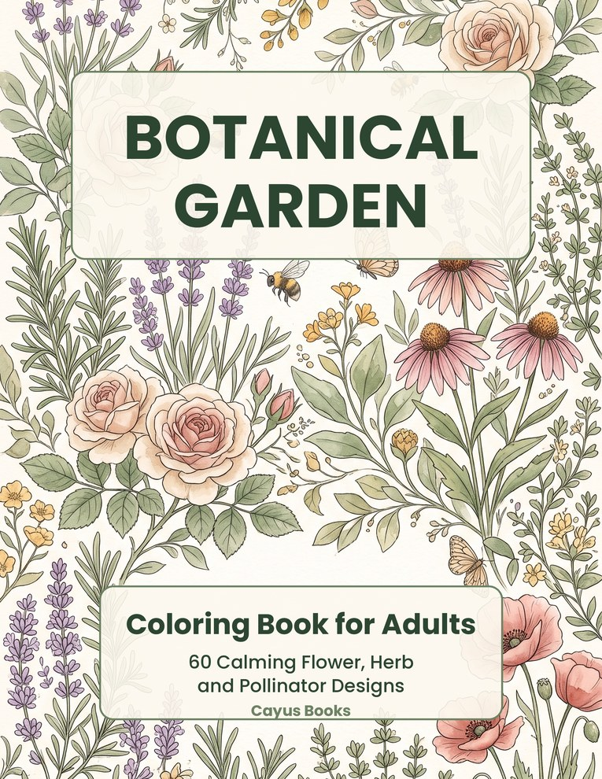
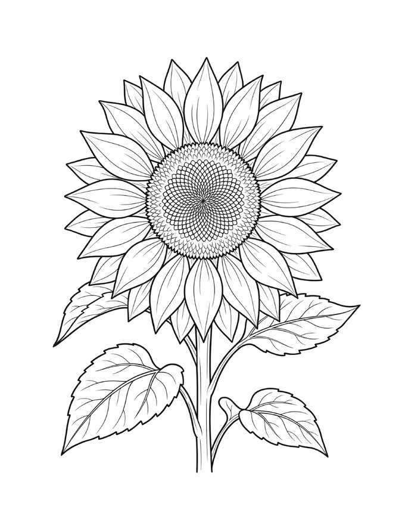
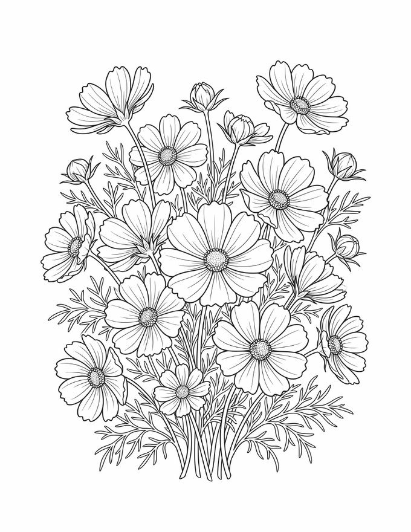

Botanical Garden
60 Calming Flower, Herb and Pollinator Designs
Flowers, herbs and pollinators, drawn in fine line, one design per page.
Sixty botanical designs: poppies, lavender, sunflowers, herbs and the bees and butterflies that visit them. Each page holds one design.
Each design is printed on one side of the page, with a blank page behind it.
A look inside




Details
- Designs
- 60
- Page size
- 8.5 × 11 in
- One side only
- Paper
- Blank page behind each design